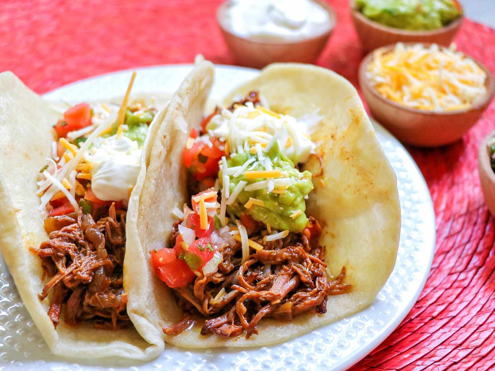

Beef Tacos

Description
This recipe was created for a Cinco De Mayo work potluck taco bar that was a big hit.
The coffee in the recipe adds a hint of smokiness and assists with tenderizing the meat as it cooks.
Serve with warm tortillas and your favorite toppings. For less heat, omit jalapenos.
Ingridients
- 1 large yellow onion, sliced into thin rings
- 1 (3 pound) boneless beef chuck roast, trimmed
- 2 (14.5 ounce) cans chili-seasoned diced tomatoes
- 1 (14 ounce) can beef broth
- 1 cup cold coffee
- 1 (4 ounce) can diced green chiles
- 2 jalapeno peppers, sliced (Optional)
- 4 cloves garlic, chopped
- 1 teaspoon chili powder
- ½ teaspoon ground cumin
- ½ teaspoon salt
- ¼ teaspoon ground black pepper
Steps
- Layer half the onion rings into the bottom of a slow cooker. Place chuck roast on top of onions.
- Pour diced tomatoes, beef broth, and coffee into the cooker over the roast; stir in diced green chiles, jalapeno peppers, garlic, chili powder, cumin, salt, and black pepper. Spread remaining onion rings over the mixture.
- Cover the cooker and cook on Low until beef is very tender, 6 to 10 hours.
- Transfer chuck roast to a bowl and shred meat. Return meat to sauce. Remove onions and serve with meat.